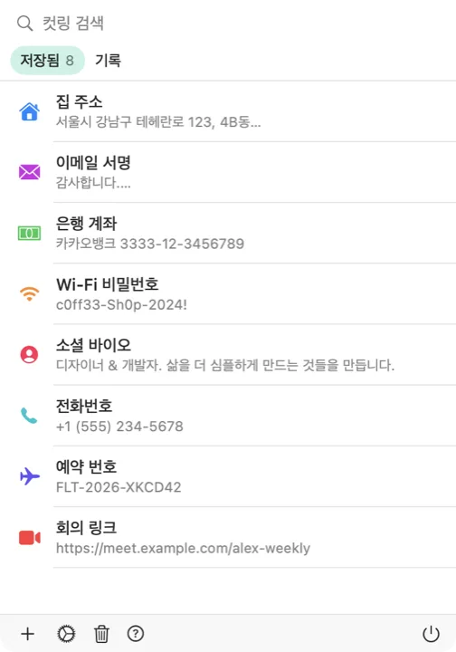

클립보드가 단축키 하나 거리에 있습니다. 컷링은 메뉴 막대에 머물다 커서가 있는 자리에 나타나므로, 하던 일을 끊지 않고 저장해 둔 스니펫을 어떤 앱에나 넣을 수 있습니다.

컷링은 Dock을 차지하지 않고 메뉴 막대에 조용히 자리합니다. 아이콘을 클릭하면 저장한 컷링과 최근 클립보드 기록이 함께 보입니다.
어떤 앱에서든 단축키를 누르면 커서 자리에 플로팅 피커가 열립니다. 단축키 조합은 설정에서 원하는 대로 바꿀 수 있습니다.
고른 항목을 쓰고 있던 앱에 곧바로 붙여넣도록 맡길 수 있습니다. 기본값은 꺼짐이고, 켤지 말지는 언제나 사용자가 정합니다.
복사한 내용이 자동으로 담기므로 놓치는 것이 없습니다. 남겨 둘 만한 항목은 클릭 한 번으로 저장하면 됩니다.
iCloud를 켜면 iPhone, iPad, Mac에서 저장한 컷링이 같은 상태로 유지됩니다. 선택 사항이며 비공개로 이뤄집니다.
계정도, 분석도, 추적도 없습니다. 클립보드는 Mac 안에 남고, 동기화를 켜면 본인의 iCloud에만 저장됩니다.